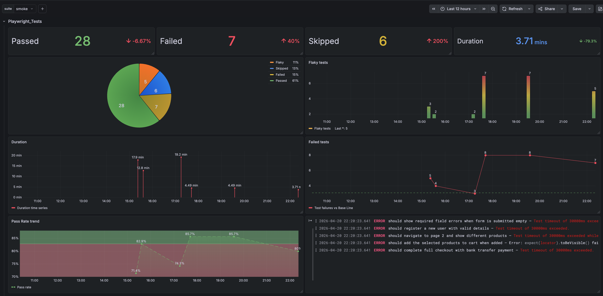

Test Automation
Sample work
Projects
A selection of test automation scripts for web applications and APIs — covering Playwright, Selenium, BDD, CI/CD, and performance testing.
Playwright
TypeScript
GitHub Actions
Grafana
ARIA selectors
An end-to-end test suite built with Playwright and TypeScript targeting a realistic e-commerce demo. The focus was on designing a system that is fast, maintainable, and trustworthy in CI — not just writing tests.
Page objects use a factory function pattern instead of classes, keeping locators lazy and composable. Selectors prioritise ARIA roles and data-test attributes, making tests resilient to visual redesigns. Every test is independently runnable, tagged for suite-level filtering, and wired into a GitHub Actions pipeline with multi-format reporting and Grafana metrics out of the box.
Test Metrics Dashboard

Java
Maven
TestNG
Selenium WebDriver
Apache POI
POM / TOM
ROBOT APIs
A hybrid framework combining Function Driven, Data Driven, Page Object Model, and Test Object Model patterns — designed to automate admin-side product management on an e-commerce platform.
- Bulk product insertion via data-driven framework, with test data fed from Excel using Apache POI
- Single product creation, edit, and deletion flows with full attribute coverage including SEO fields
- Selenium APIs covering
Select, Actions, WebDriverWait, and ExpectedConditions
java.awt.Robot APIs for native Windows control interaction- TestNG
suite.xml used to preserve test execution order across the suite
Java
Maven
JUnit 4
Selenium WebDriver
Cucumber-JVM
Gherkin
BDD
POM / TOM
BDD test automation for a full e-commerce website — acceptance criteria written in Gherkin and driven through Cucumber-JVM, with Page Object and Test Object Model patterns underneath.
- Homepage features — website localisation settings
- New customer registration and personal details management
- Product search and attribute comparison flows
- Wishlist management — add, delete, and modify item quantities
- Purchase flow — add to cart and checkout
- Recommended Products UI — number of recommendations and scroll navigation
- Selenium APIs:
Select, Actions, WebDriverWait, ExpectedConditions
Java
JUnit 4
Selenium WebDriver
Jenkins
Apache Tomcat
Maven
GitHub integration
Selenium tests running inside a Jenkins CI pipeline — demonstrating a range of WebDriver and Selenium APIs in a fully automated, continuously triggered setup.
- Drag-and-drop and element scrolling using the
Actions API
- Mouse-over simulation and screenshot capture during test runs
- Firebug browser extensions via Firefox Profile configuration
- CSS value retrieval from WebElements
- Automation using Selenesse APIs
- Selenium 1 command execution via
WebDriverBackedSelenium
Just a sample of my work. To see more or discuss possible work →
Let's Talk